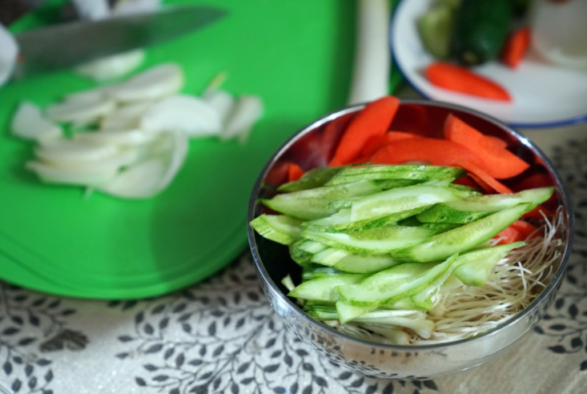
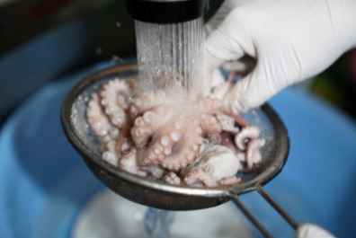
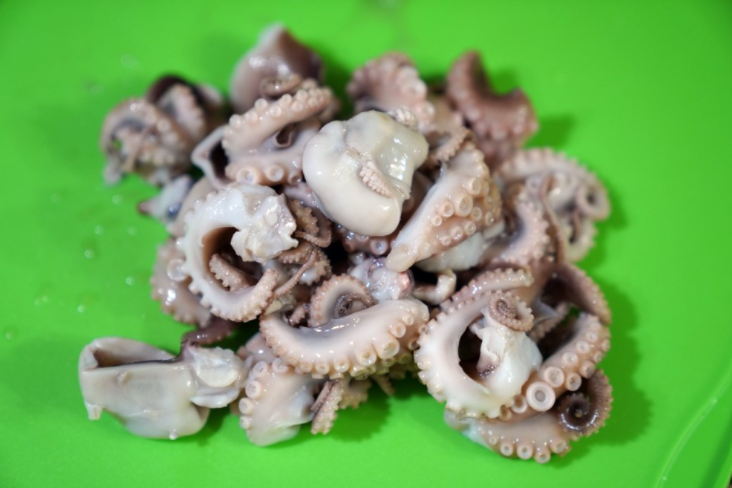

Korea Food
재료 리스트
주꾸미 4마리 | 달래 80g | 양파 1/2개 | 통깨 1큰술 | 오이 1/2개 | 당근 1/4개 | 홍고추 1개
양념(쯔유 3큰술 | 고춧가루 3큰술 | 식초 3큰술 | 다진마늘 1/2큰술 | 설탕 1큰술 )
레시피
1. 채소손질
달래는 뿌리에 있는 겉껍질을 제거한 후 남아있는 흙을 물에 헹궈 세척해주세요.
물기를 제거후 적당한 크기로 썰어준 뒤 오이와 당근도 반으로 잘라 두껍지 않게 썰고
마지막으로 양파 반개를 얇게 썰어 준비해주세요.
 
2. 쭈꾸미 손질
머리와 다리의 연결 부분에 칼짐을 내어 머리를 뒤집어 내장과 먹물, 알을 제거해주세요.
큰 그릇에 주꾸미와 밀가루 3수저를 넣고 주물러 씻은 후 흐르는 물에 헹군 뒤 물기를 제거해주세요.
(밀가루 대신 굵은 소금을 뿌리고 쭈꾸미의 점액질 및 빨판에 이물질을 제거해도 된다.)
세척한 쭈꾸미는 끓는 물에 굵은 소금을 넣어 30초간 빠르게 데치고 찬물에 식혀준 뒤
몸통과 머리를 분리해 다리는 2개씩 4등분하여 잘라주세요.
3. 양념 버무리기
먼저 만들어둔 양념장에 쭈꾸미를 담아 버무린 뒤, 다음으로 달래와 양파를 넣고 버무려주세요.
부족한 간은 쯔유를 넣어서 맞춰주고 새콤한 맛을 원한다면 설탕 1/2작은술, 식초 또는 매실청을 넣어주세요.
매콤한 맛을 원한다면 홍고추 하나를 썰어 넣어준 뒤 마지막으로 통깨를 뿌려주세요.

쭈꾸미 달래 초 무침 완성!!